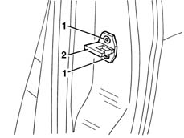
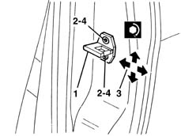

7005B14 front side door catch striker r r
- Path
- Procedures > 70 FITTINGS > 7005 PASSENGER COMPARTMENT FRONT SIDE DOORS > 7005B front door mechanical locks > 7005B14 front side door catch striker r r
- Kind
- repair procedure (removal / refitting; the operation number is the code)
- Applies to
- all engines; all production periods
- Interactive page
- https://sloeber94.github.io/elrnDB-lYpsln/en/#/2429484
Applies to: all engines; all production periods
 Removing
Removing
 Refitting
Refitting1. Open the doors and undo the bolts.
2. Keep the striker.

Applies to: all engines; all production periods
Refitting
RemovingCheck that the striker is undamaged.
1. Fit the striker.
2. Screw in the bolts without tightening them.
3. Use the bolt slots to move the striker into the correct position. Permitted adjustment movements are indicated by arrows.
4. Tighten the fixing bolts.
 | Fastening | Component | Ø | Value (daNm) |
|---|---|---|---|---|
- | Bolt | STRIKER ON FRONT SIDE DOOR PILLAR | M8 | 2.4 |

Applies to: all engines; all production periods
Check the striker and catch fit together properly and ensure the door is aligned when closed.